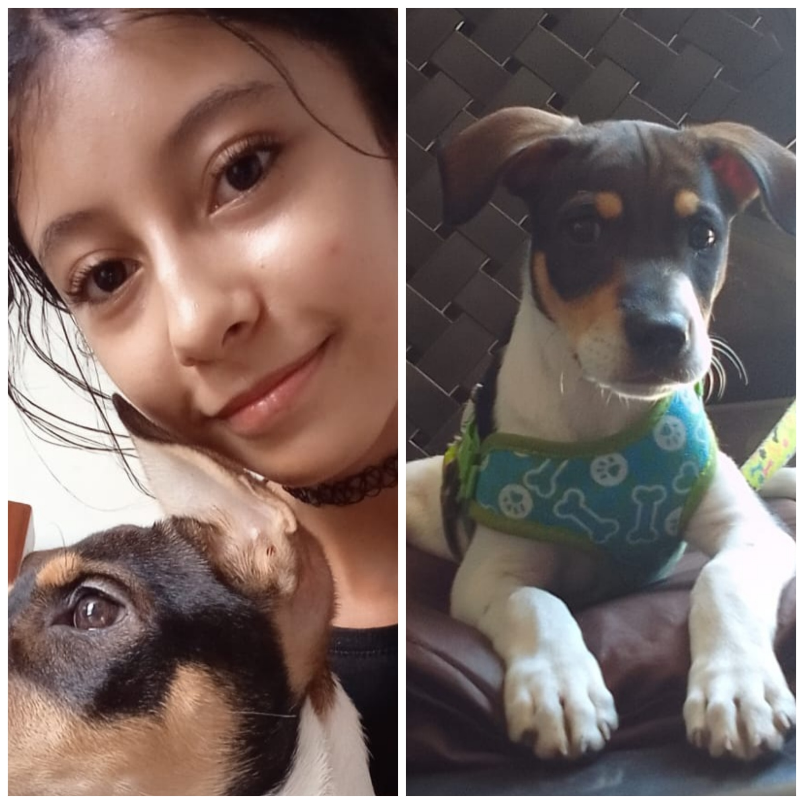

Sobre Mi
Mi nombre es Jasmin Esperanza, tengo 17 años y la razón principal del por qué estoy aquí es
porque me encanta el tema de programar, lo poco que llevamos estudiando en el Sena me lo
confirma todavía más, me gustó desde que empecé a estudiarlo en el colegio.
No tengo muchos pasatiempos, en mis ratos libres tiendo a ver películas con mi hermana, le ayudo
a mi mamá en las tareas del hogar, repaso algunas cosas que me puedan ayudar en el rendimiento
académico y lo que mas me gusta es salir con mi novio, pasar tiempo con él. Mis comidas
favoritas son la hamburguesa, la carne, los spaguettis y amo los dulces, sobre todo las gomitas.
Soy una persona muy sociable, pero no tan extrovertida, me gusta escuchar a los demas y ayudar
cuando sea necesario.
Tenemos otro integrante en la familia llamado Mailo. Mailo llego a nuestras vidas en junio del
año pasado (2023), lo que significa que ya casi tiene un añito, es un perro muy jugueton,
mordelon, es un poco ruidoso y a decir verdad a sido difícil educarlo, pero ha sido una gran
compañia y esperamos estar mucho tiempo con él.